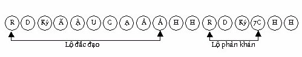

|
Luận
giải Kinh Chánh Tri Kiến Tỳ khưu Chánh Minh
Phần I. Duyên khởi Chánh kinh: “Như vầy tôi nghe. Một thời Đức Thế Tôn ở Sāvatthī (Xávệ), tại Jetavana (rừng Jeta), của ông Anāthapiṇḍika (Cấp cô độc). Lúc bấy giờ, Tôn giả Sāriputta (Xálợiphất) gọi các Tỳkhưu: “Này các Tỳkhưu”. “Thưa Hiền giả”, các vị Tỳkhưu ấy vâng đáp Tôn giả Sāriputta. Tôn giả Sāriputta nói như sau: “Chư Hiền, chánh tri kiến (sammādiṭṭhi), chánh tri kiến, được gọi là như vậy. Chư Hiền, phải như thế nào, một Thánh đệ tử có chánh tri kiến, có tri kiến chánh trực (ujugatā’ssa diṭṭhi), có lòng tin pháp tuyệt đối (dhamme aveccappasādena), và thành tựu Diệu pháp này (āgato imaṃ saddhamman-ti)? ” [1]. Giải. Đây là một trong những bài kinh quan trọng được ghi chép trong Trung bộ kinh. Người thuyết giảng là vị đệ nhất Thượng thủ thinh văn: Sāriputta (Xálợiphất), địa điểm thuyết giảng là Jetavana (rừng Jeta), khu rừng nhỏ này có tên là Jeta vì đó là tài sản riêng của ông Hoàng Jeta (Kỳđà). Trưởng giả Anāthapiṇḍika (Cấp cô độc) mua lại khu rừng này, bằng cách trải vàng trên mặt đất, với ý định kiến tạo một ngôi đại tự cúng dường đến chư Tăng có Đức Phật là tọa chủ, và ông đã thành tựu được ý nguyện. Ngôi đại tự này có tên là Jetavanavihāra.[2] Có năm cách hỏi: - Hỏi để biết điều chưa biết (adiṭṭhajotanā pucchā). - Hỏi để hiểu thêm điều đã biết (diṭṭhasaṃsandanā pucchā). - Hỏi để dứt bỏ hoài nghi (vimaticchedanā pucchā). - Hỏi để người trả lời xác nhận ý kiến của mình (anumati pucchā). - Hỏi với ý nghĩ: “Nếu người được hỏi không biết, mình sẽ trả lời” (kathetukamyatā pucchā) .[3] Đức Sāriputta hỏi chư Tỳkhưu từ xa đến, theo cách hỏi thứ năm. Trong câu hỏi được Đức Sāriputta (Xálợiphất) nêu lên, có bốn tiêu đề: Chánh tri kiến, có tri kiến chánh trực, có lòng tin pháp tuyệt đối và thành tựu diệu pháp. A- Chánh tri kiến (sammādiṭṭhi). Sammādiṭṭhi theo nghĩa của từ ngữ là “thấy đúng”, theo nghĩa mở rộng là “hiểu đúng”, nên sammādiṭṭhi được dịch là chánh tri kiến. Nên lưu ý, chữ diṭṭhi khi đứng đơn độc thường hiểu là tà kiến (micchādiṭṭhi), nếu chỉ cho trí thì trước chữ diṭṭhi là chữ sammā (chánh). Bản sớ giải kinh Chánh tri kiến [4] có giải thích chánh kiến là: - Gọi là chánh tri kiến vì “hiểu đúng, thấy đúng”. - Gọi là chánh tri kiến vì là “cái biết, cái thấy cao quý. Khi thành tựu được chánh kiến thì “diệt trừ được tà kiến”, “diệt trừ được vô minh”, trở thành bậc Thánh. 1- Chánh kiến là “hiểu đúng, thấy đúng”. Vì sao phải “hiểu đúng, thấy đúng”?. Vì rằng: Có khi “thấy đúng mà không hiểu”, có khi “hiểu đúng mà không thấy”. a- Thấy đúng mà không hiểu. Như Trưởng giả Subha Todeyya có bạch hỏi Đức Phật: “Dissanti hi, bho Gotama, manussā appāyukā, dissanti dīghāyukā; dissanti bavhābādhā, dissanti dubbaṇṇā; dissanti appesakkhā, dissanti mahesakkhā; dissanti appabhogā, dissanti mahābhogā; dissanti nicākulinā, dissanti uccākulinā; dissanti duppaññā, dissanti paññavanto. Ko nu kho, bho Gotama, hetu ko paccayo yena manussānaṃ yeva sataṃ manussabhūtānaṃ dissati hīnappaṇītatā ‘ti? “Thưa Tôn giả Gotama, chúng ta thấy có người đoản thọ, có người trường thọ; chúng ta thấy có người nhiều bịnh, có người ít bịnh; có người xấu sắc, có người đẹp sắc; có người quyền thế nhỏ, có người quyền thế lớn; có người tài sản nhỏ, có người tài sản lớn; có người trí tuệ yếu kém, có người đầy đủ trí tuệ. Thưa Tôn giả Gotama, do nhân gì, do duyên gì, giữa loài người với nhau, khi chúng là loài người, lại có người hạ liệt, có người ưu thắng?” [5]. Lời bạch hỏi trên, minh chứng cho “thấy đúng nhưng không hiểu”. Điều này chưa hẵn là có lỗi, chỉ có lỗi khi hiểu sai. Trong kinh Đại nghiệp phân biệt [6], Đức Phật có tuyên bố về “sự thấy đúng, nhưng hiểu sai” của các Samôn, Bàlamôn có thiên nhãn như sau: - Có hạng Samôn, Bàlamôn có thiên nhãn thấy: “Người tạo ác nghiệp khi mệnh chung sanh vào khổ cảnh, người tạo thiện nghiệp khi mệnh chung sanh về nhàn cảnh”. Vị ấy đi đến kết luận: “Chắc chắn có quả báo của thiện nghiệp và ác nghiệp”. Đức Phật chấp nhận. Đây là thấy đúng hiểu đúng (là chánh kiến – Ns). Nhưng nếu vị ấy cho rằng: “Người tạo thiện nghiệp, sau khi mệnh chung chắc chắn sinh về nhàn cảnh, người tạo ác nghiệp, sau khi mệnh chung chắc chắn sinh vào khổ cảnh”. Đức Phật không chấp nhận và Ngài cho đó là “trí thuộc tà kiến”(sđd)[7]. Tức là thấy đúng hiểu sai. - Có hạng Samôn, Bàlamôn có thiên nhãn thấy: “Người tạo ác nghiệp, sau khi mệnh chung sanh về nhàn cảnh, người tạo thiện nghiệp, sau khi mệnh chung sanh vào khổ cảnh”. Vị ấy đi đến kết luận: “Chắc chắn không có quả báo của thiện hạnh, không có quả báo của ác hạnh”. Đức Phật không chấp nhận và Ngài cho đó là “trí thuộc tà kiến”. Đây là thấy đúng hiểu sai”. Và Đức Phật giải thích: “Một thiện nghiệp đã làm, hay một chánh kiến được nắm giữ, chúng hiện khởi vào lúc lâm chung, sẽ đưa chúng sanh này tái sinh về nhàn cảnh, cho dù trước đó chúng sanh này tạo nhiều ác nghiệp. Một ác nghiệp đã làm, hay một tà kiến được nắm giữ, chúng hiện khởi vào lúc lâm chung, sẽ đưa chúng sanh này tái sinh về khổ cảnh, cho dù trước đó chúng sinh này tạo nhiều thiện nghiệp.” b- Hiểu đúng nhưng không thấy. Như hàng phật tử hiểu rõ lý vô thường, khổ, vô ngã, nhưng hiện tướng vô thường, hiện tướng khổ, hiện tướng vô ngã thì chưa thấy. Khi người Phật tử thấy “vô thường”, thì cái vô thường ấy đã diệt, thấy “khổ” thì cái tướng khổ ấy đã diệt. Một số hành giả khi thực hành pháp đã nhầm lẫn “khổ thọ” và “tướng khổ”. Tướng khổ không phải là khổ thọ, Đức Phật dạy: “Yaṃ panāniccaṃ dukkhaṃ va taṃ sukhaṃ vā’ti? - Dukkhaṃ, bhante.” “Cái gì vô thường, cái ấy là khổ hay là lạc? - Là khổ, bạch Thế Tôn”. Thọ lạc cũng vô thường, thọ lạc cũng khổ. Rõ ràng tướng khổ khác với thọ lạc, tương tự như vậy “tướng khổ khác với thọ khổ”. Hoặc tuy hiểu được trạng thái Nípbàn là “tịch lặng”, nhưng chưa thấy được Nípbàn ..v.v. Trong Sớ giải kinh Pháp cú có câu chuyện tóm lược như sau: Hai vị Tỳkhưu bạn. Tương truyền trong thành Sāvatthī (Xávệ), có hai thiện gia nam tử là bạn thân, cùng xuất gia trong Giáo pháp của Đức Phật. Một vị chuyên về Pháp học và thông suốt pháp học, vị kia chuyên về Pháp hành chứng đạt quả vị Alahán cùng những pháp thần thông. Có nhóm Tỳkhưu được Đức Phật chỉ dạy thiền định, các vị ấy đến trú xứ vị Pháp hành. Nhờ tinh tấn tu tập dưới sự chỉ dạy của Ngài, tất cả đều thành tựu quả vị Alahán. Mãn mùa an cư, các vị ấy xin thầy trở về yết kiến Đức Thế Tôn, vị Trưởng lão nói: - Hãy đi, này chư Hiền, hãy nhân danh tôi đảnh lễ Đức Đạo sư cùng 80 vị Đại đệ tử, hãy cho tôi gởi lời thăm hỏi đến vị Đại đức Pháp sư là bạn của tôi. Vâng theo lời dạy, chư Thánh tăng ấy đã làm đúng theo lời vị Thánh Alahán (thầy của các Ngài). Khi các Ngài chuyển lời thăm hỏi của vị Pháp hành đến vị Pháp sư, vị ấy hỏi: - Thưa chư Hiền, thầy của chư Hiền là ai? - Thưa Ngài, đó là vị Đại Đức bạn cũ của Ngài. - Chư Hiền có học được tập kinh nào không? - Thưa Ngài, không. Vị Pháp sư lần lượt hỏi từ những bài kinh dài, kinh trung bình, những bài kinh ngắn, những vị Tỳkhưu đều trả lời “không biết”. Vị Pháp sư suy nghĩ: “Ông này không thuộc nỗi bài kệ 4 câu, mà dám dạy người khác hành pháp, để khi gặp lại ta sẽ chất vấn ông vài câu xem sao”. Thời gian sau vị trưởng lão Pháp hành trở về yết kiến Đức Thế Tôn và tìm đến thăm vị Trưởng lão Pháp sư. Sau những lời thăm hỏi thân hữu, vị trưởng lão Pháp học toan vấn nạn vị Pháp hành. Biết được ý của vị Trưởng lão Pháp học, Đức Thế Tôn suy nghĩ: “Nếu vị Tỳkhưu này xúc phạm đến con Như Lai, ông ấy phải rơi vào địa ngục”. Để tế độ vị Pháp học, Đức Phật như vô tình ngự đến nơi ấy, ngồi lên Pháp tọa được soạn sẵn (chư Tăng thời ấy có lệ: Trước khi luận pháp thường dọn sẵn ngôi Pháp tọa, phòng khi Đức Thế Tôn bất ngờ ngự đến, Đức Thế Tôn sẽ ngồi vào nơi được soạn sẵn). Khi an tọa rồi, Đức Thế Tôn hỏi vị Trưởng lão Pháp học một câu hỏi về trạng thái Sơ thiền, vị Pháp sư không trả lời được, lần lượt Đức Phật hỏi về trạng thái Nhị thiền cho đến thiền Vô sắc, rồi đến các tầng Thánh Quả, vị Trưởng lão Pháp học đều im lặng. Tiếp đến, Đức Thế Tôn hỏi vị trưởng lão Pháp hành về trạng thái các tầng thiền cùng Thánh quả. Vị Trưởng lão Pháp hành trả lời thông suốt. Đức Thế Tôn tán thán vị Trưởng lão Pháp hành, rồi Đức Phật dạy: -“Bahum pice sahitaṃ bhāsamāno. Na takkaro hoti naro pamatto. Gopo’va gāvo gaṇayaṃ paresaṃ. Na bhāgavā sāmaññasssa hoti “Nếu người nói nhiều kinh. Không hành trì, phóng dật. Như kẻ chăn bò người. Không phần Samôn hạnh”.[8] Câu truyện trên cho thấy vị Pháp học tuy hiểu thông Giáo lý, nhưng không thực hành nên không chứng được những pháp thượng nhân, tức là “hiểu đúng nhưng chưa thấy đúng”. Trong Trường bộ kinh, bài kinh Phạm Võng, Đức Phật giảng rộng “những tà kiến sinh lên” là do “thấy đúng nhưng hiểu sai”. Thế là từ đó dẫn đến những chủ thuyết tà kiến” [9]. Như vậy được gọi là chánh tri kiến (sammādiṭṭhi) phải gồm đủ hai điều: Hiểu đúng và thấy đúng, trong đó hiểu đúng là chủ yếu, nên chi pháp của chánh kiến là tâm sở trí (ñāṇacetasika). Hiểu đúng nhưng không thực hành pháp để thấy rõ điều đã hiểu, cũng không có kết quả thù diệu nào đáng kể. Xét về khía cạnh “giải thoát trong tương lai”, thì hiểu đúng nhưng chưa thấy đúng vẫn tốt hơn so với “thấy đúng mà không hiểu”. Vì sao? Vì trí là chủ yếu trong sự giải thoát, “thấy đúng mà không hiểu” là “vắng mặt trí”. “Hiểu đúng mà chưa thấy” là “có trí, nhưng trí chưa có sức mạnh”, khi trí được tu tập thành tựu được sức mạnh sẽ mang đến giải thoát, còn “không có trí” thì hoàn toàn thất bại trong việc “giải thoát khổ”. Đức Phật có dạy: “Đệ tử Như Lai dù có dễ duôi vẫn hơn ngoại đạo tinh tấn.” [10] Nên ghi nhận “sự thấy” này, phải là thấy trực tiếp, không phải thấy qua ảnh phản chiếu, ví như người thấy rõ mặt trăng trên hư không, không phải thấy bóng trăng dưới đáy nước. Sự thấy này ám chỉ “nhận thức của người đang (hay đã) thực hành pháp” (là trí do tu tập phát sinh). Thấy như thế nào, gọi là thấy đúng? Gọi là thấy đúng là: Thấy sự sinh lên, sự diễn tiến và sự hoại diệt của pháp hữu vi. Tīṇimāni, bhikkhave, saṅkhatassa saṅkhatalakkhaṇāni. Katamāni tīṇi? Uppādo paññāyati, vayo paññāyati, ṭhitassa aññathattaṃ paññāyati..… “Có ba tướng hữu vi này, này các Tỳkhưu cho các pháp hữu vi. Thế nào là ba? Sinh được trình bày rõ (paññāyati), diệt được trình bày rõ, sự thay đổi khi đang trú (ṭhitassa aññathattaṃ) [11] được trình bày rõ. [12] Nói rõ hơn “thấy đúng” là thấy được tam tướng: Vô thường tướng, khổ tướng và vô ngã tướng của các pháp hữu vi. Như Phật ngôn: “Yo ca vassasataṃ jīve. Apassaṃ udayavyayaṃ Ekāhaṃ jīvitaṃ seyyo. Passato udayavyayaṃ. “Ai sống cả trăm năm. Không thấy pháp sinh diệt. Tốt hơn sống một ngày. Thấy được pháp sinh diệt.[13] Hiểu như thế nào, gọi là hiểu đúng? Sự hiểu đúng này rất đa dạng, có thể tóm gọn vào mấy cách như sau:: *- Hiểu rõ về pháp lẫn nghĩa. Như: “Yo dhammaṃ deseti so atthapaṭisaṃvedī ca hoti dhammappaṭisaṃvedī ca: “Ai thuyết pháp cần phải liễu giải nghĩa và cần phải liễu giải pháp” (sđd – A. i, 151). Sự hiễu rõ pháp là biết rõ “đây là thiện, đây là bất thiện”, đây là pháp trắng, đây là pháp đen, pháp này có lỗi, pháp này không có lỗi … *- Hiểu rõ nhân quả. Như: “Hành sinh lên do duyên vô minh, thức sinh lên do duyên hành….”, hay đau khổ là quả của ác nghiệp, hạnh phúc là quả của thiện nghiệp… Hiểu nhân quả, là hiểu “các pháp sinh lên do nhân”, nhân ấy không phải là Thượng đế [14], cũng không phải ngẫu nhiên pháp ấy sinh lên (tức là không phải vô nhân sinh). Đức Assaji có dạy đạo sĩ Upatissa (sau này là Đức Sāriputta). “Ye dhammā hetuppabhavā. Ye saṃ hetuṃ Tathāgato… “Các pháp sinh lên do nhân. Đức Như lai chỉ rõ nhân ấy…”[15] *- Hiểu chúng sinh có nghiệp riêng. *-Hiểu rõ lý Tứ Diệu đế. Như: “Samādhiṃ bhikkhave, bhāvetha. Samāhito, bhikkhave, bhikkhu yathābhūtaṃ pajānāti. Kiñca yathābhūtaṃ pajānāti? Idaṃ dukkhanti yathābhūtaṃ pajānāti,’ayaṃ dukkhasamudayo’ti yathābhūtaṃ pajānāti,’ayaṃ dukkhanirodho’ti yathābhūtaṃ pajānāti,’ayaṃ dukkhanirodhagāminī paṭipadā’ti yathābhūtaṃ pajānāti. “Này chư Tỳkhưu, hãy tu tập tập định. Này các Tỳkhưu, Tỳkhưu có định, như thật rõ biết (pajānāti). Và như thật rõ biết cái gì? Như thật rõ biết: “Đây là khổ”, như thật rõ biết “đây là khổ tập”, như thật rõ biết “đây là khổ diệt”, như thật rõ biết “đây là con đường đưa đến khổ diệt”.[16] Ngoài ra, hiểu đúng thấy đúng là: “Hiểu đúng nghĩa, thấy đúng pháp” (xem bảng tâm lộ đắc đạo ở sau). Hiểu đúng nghĩa. Là hiểu đúng ý nghĩa của pháp chế định (sammutidhamma) lẫn ý nghĩa của pháp chân đế (paramatthadhamma). Có lần Tôn giả Godatta hỏi gia chủ Citta [17] đang ngồi xuống một bên rằng: “Yā cāyaṃ, gahapati, appamāṇā cetovimutti, yā ca ākiñcaññā cetovimutti, yā ca suññatā cetovimutti, yā ca animittā cetovimutti. Ime dhammā nānatthā nānābyañjanā, udāhu ekatthā byañjanameva nānan’ti? “Này cư sĩ vô lượng tâm giải thoát (appamāṇā cetovimutti), vô sở hữu tâm giải thoát (akiñcaññā cetovimutti), không tâm giải thoát (suññatā cetovimutti), vô tướng tâm giải thoát (animittā cetovimutti). Những pháp này khác nghĩa khác ngôn từ (nānattha nānābyañjanā), hay đồng nghĩa chỉ khác ngôn từ (ekatthā byañjanameva)?. Gia chủ Citta đáp rằng: “Atthi, bhante, pariyāyo yaṃ pariyāyaṃ āgamma ime dhammā nānattha nānābyañjanā ca. Atthi pana, bhante pariyāyo yaṃ pariyāyaṃ āgamma ime dhammā ekattha byañjanameva nānan’ti. “Thưa Tôn giả, các pháp này, có pháp môn khác nghĩa, khác ngôn từ. Thưa Tôn giả, các pháp này, có pháp môn đồng nghĩa, khác ngôn từ”. Tiếp theo gia chủ Citta giải thích, đại ý như sau: - Tâm vô lượng giải thoát (appamānā cetovimutti). Tâm vô lượng là Từ, bi, hỷ, xả được biến mãn khắp 10 phương không phân biệt chúng sinh (sabb’atthatāya: Không phân biệt chúng sinh). Giải thoát, là ra khỏi “phân biệt tưởng”, không còn phân biệt chúng sinh này là người thân, chúng sinh này là người không thân, chúng sinh này là kẻ thù… Tâm vô lượng giải thoát là: “Thành tựu thiền hữu sắc với một trong bốn đề mục: Từ, bi, hỷ và xả, đã thoát ra phân biệt tưởng”. - Tâm vô sở hữu giải thoát (akiñcaññā cetovimutti). Tâm vô sở hữu là vị thành đạt thiền Vô sắc với đề mục Vô sở hữu xứ, gọi là giải thoát vì ra khỏi “thức vô biên tưởng”. - Không tâm giải thoát (suññatā cetovimutti). Vị Tỳkhưu đi đến khu rừng, đi đến cội cây, đi đến nơi trống nhà, ngồi quán tưởng “cái này là trống không tự ngã, cái này là trống không ngã sở” (Không tâm là tâm an trú vào trống không). Gọi là giải thoát vì ra khỏi ngã tưởng và ngã sở tưởng. Tức là vị Tỳkhưu an trú tâm trong tướng rỗng không, chứng và trú không tánh định (suññata samādhi). - Vô tướng tâm giải thoát (animittā cetovimutti). Vị Tỳkhưu không tác ý đến bất kỳ tướng nào cả, chứng và trú vô tướng định (animitta samādhi) (gọi là tâm vô tướng). Gọi là giải thoát vì ra khỏi “tưởng tướng”. Các pháp môn này, với ý nghĩa như vậy thì “khác nghĩa, khác ngôn từ”. - Nếu dùng tham luyến (rāga), sân (dosa) và ái (taṅhā) là những tiêu chỉ để so sánh thì: *-Bốn đạo và 4 quả Siêu thế là “vô lượng tâm giải thoát”, vì thoát ra tham, sân, si. Bộ Pháp tụ (Dhammasaṅgani) có ghi: Katame dhammā appamānā? Ariyāpannā maggā ca, maggaphalāni ca, asaṅkhatā dhātu ca. Ime dhammā appamānāni (dhs.1028). “Thế nào là các pháp vô lượng? Các đạo Siêu thế, các quả của đạo và vô vi giới. Đây là các pháp vô lượng”. [18] Trong bốn tâm Thánh quả Siêu thế, tâm Thánh quả Alahán còn gọi là “bất động tâm giải thoát (akuppa = arahattaphala cetovimutti), vì vị Thánh Alahán đã đoạn tận tham, sân, ái, chúng không thể sinh khởi trong tương lai, tâm không còn rung động bởi chúng. Vô vi giới (asaṅkhatā dhātu) là một tên gọi khác chỉ cho Nípbàn. *- Nếu tham, sân, ái là một sở hữu của phiền não luân hồi, thì tâm Thánh quả Alahán là “tâm vô sở hữu giải thoát”. *- Nếu tham, sân, ái là một chướng ngại (palibodha), thì tâm Thánh quả Alahán là vô chướng ngại vì “rỗng không” tham, sân, ái. Tâm Thánh quả Alahán là “không tâm giải thoát” vì không có tham, sân, si và thoát ra tham, sân, ái. Nếu tham luyến, sân, ái tác thành tướng trạng riêng của chúng, thì tâm Thánh quả Alahán là “tâm vô tướng giải thoát”. Với ý nghĩa như thế, thì những pháp này là “đồng nghĩa, khác ngôn từ”. [19] Như vậy: - Danh từ tâm vô lượng giải thoát có hai ý nghĩa: chỉ cho từ, bi, hỷ xả và chỉ cho tám tâm Siêu thế. Đây là cùng danh từ khác ý nghĩa. - Danh từ tâm vô sở hữu giải thoát có 2 ý nghĩa: *- Gọi là vô sở hữu vì thành tựu thiền Vô sắc với đề mục “Vô sở hữu xứ”. *- Gọi là vô sở hữu vì không có tham, sân, ái, (tham, sân, ái) là sở hữu của phiền não luân hồi”. Đây là cùng danh từ khác ý nghĩa - Danh từ không tâm giải thoát có hai ý nghĩa: *- An trú trong định không tánh. *- Trống rỗng tham sân si (tức là tâm Thánh quả Alahán dù không an trú trong định không tánh vẫn trống rỗng tham, sân, si). Đây là cùng ngôn từ, khác ý nghĩa - Danh từ vô tướng tâm giải thoát có hai ý nghĩa: *- An trú trong định vô tướng. *- Không có tướng của tham sân si (tức là tâm Thánh quả Alahán dù không an trú trong định vô tướng, vẫn không có tướng của tham, sân, si). Đây là cùng ngôn từ khác ý nghĩa. Nếu cả bốn danh từ: Vô lượng tâm giải thoát, Vô sở hữu tâm giải thoát, Không tâm giải thoát, Vô tướng tâm giải thoát, đều mang ý nghĩa “chỉ cho tâm Thánh quả Alahán”. Đây là đồng nghĩa, khác danh từ. Một số pháp khác, khác nghĩa, khác danh từ, như: Tham, sân, si, thiện, bất thiện… 2- Chánh kiến là “cái biết, cái thấy cao quý.” Có thể hiểu “cái biết, cái thấy cao quý” qua hai khía cạnh: - Là cái biết, cái thấy của bậc Thánh nhân. Trước khi Đức Chánh giác hiện khởi trong thế gian, các Samôn, Bàlamôn tuy tu tập đạt được thắng trí (abhiññāṇa), cũng không thể hiểu đúng để trở thành bậc Thánh nhân, như hai vị thầy của Bồtát Siddhattha hoặc đạo sĩ Atưđà. Tức là “cái biết, cái thấy” ấy còn nằm trong lãnh vực phàm nhân (dĩ nhiên là phàm nhân đặc biệt hơn các phàm nhân khác). Ngoại trừ những bậc đại căn như Đức Chánh giác, Đức Độc giác tự mình giác ngộ, còn các bậc Thinh văn cho dù là Thượng thủ thinh văn, cũng phải “nhờ nghe pháp của bậc Chánh giác mới hiểu đúng”. Nhờ hiểu đúng, rồi thực hành pháp dẫn đến thấy đúng [20]. Và “hiểu đúng, thấy đúng” này, được phổ hóa đến nhân thiên chỉ có trong thời Đức Chánh giác xuất hiện trong thế gian, nên chánh kiến là “cái biết, cái thấy của bậc cao quý” (bậc cao quý ở đây ám chỉ Đức Phật, Đức Độc Giác và các Bậc Thánh Thinh văn đệ tử Phật). - Là “cái biết, cái thấy” cao tột, từ đó trở thành bậc Thánh nhân. Tức là, cái biết, cái thấy qua thực hành pháp, dẫn đến giải thoát, thành tựu địa vị Thánh nhân. Nhưng thấy cái gì, hiểu cái gì, để trở thành bậc Thanh nhân? Thấy được Nípbàn và hiểu rõ ý nghĩa Nípbàn. … Dhammassa hoti anudhammacāri Rāgañ ca dosañ ca pahāya mohaṃ Sammappajāno suvimuttacitto… “… Hành pháp và tùy pháp. Từ bỏ tham, sân, si. Tỉnh giác, tâm giải thoát ..” [21]. Nên ghi nhận: Chánh kiến không phải là loại trí phát sinh do nghe (suttā mayā ñāṇa) hay trí phát sinh do suy tư (cintā mayā ñāṇa). Vì rằng: - Trí do nghe còn “nương tựa vào người khác”, tức là chấp nhận một chủ thuyết hay một quan điểm nào đó do nương vào niềm tin. - Trí do suy tư thì không (hay chưa) “thấy đúng sự thật”. “… Aññatreva, āvuso Savittha saddhāya aññatra anussavā aññatra ākāraparivitakkā aññatra diṭṭhinijjhānakkhantiyā ahametaṃ jānāmi ahametaṃ passāmi - “bhavanirodho nibbānan” ’ti. “Này hiền giả Savittha, ngoài lòng tin, ngoài lòng ưa thích, ngoài truyền thuyết, ngoài thẩm lự các điều kiện, ngoài thẩm định và chấp nhận quan điểm, tôi biết như sau, tôi thấy như sau: “Do hữu diệt là Nípbàn” [22]. Đoạn kinh trên cho thấy “cái biết, cái thấy” của Ngài Musila là “biết, thấy qua sự chứng thực”, không do nghe, không do suy tư. Một đoạn kinh khác ghi nhận rằng: Có lần Tôn giả Kaccānagotta, sau khi đi đến đảnh lễ Đức Thế Tôn xong rồi, ngồi xuống một bên bạch hỏi Đức Thế Tôn: “Sammādiṭṭhi, sammādiṭṭhī’ti, bhante vuccati. Kittāvatā nukho, bhante, sammādiṭṭhi hotī’ti? “Chánh kiến, chánh kiến, bạch Đức Thế Tôn, được nói đến như vậy. Bạch Đức Thế Tôn, cho đến như thế nào là chánh kiến?”. Đức Thế Tôn trả lời rằng: “… Lokassasamudayaṃ kho, Kaccāna , yathābhūtaṃ sammappaññāya passato yā loke natthitā sā na hoti. “… Này Kaccāyana, ai với chánh trí tuệ thấy như chơn thế giới tập khởi, vị ấy không chấp nhận thế giới là không có. Lokassanirodhanṃ kho, Kaccāna, yathābhūtaṃ sammappaññāya passato yā loke atthitā sā na hoti. Này Kaccāyana, ai với chánh trí tuệ thấy như chơn thế giới đoạn diệt, vị ấy không chấp nhận thế giới là có.” Và: “… na kaṅkhati na vicikicchati aparapaccayā ñāṇamevassa ettha hoti. Ettavatā ko, Kaccāna, sammādiṭṭhi. … Vị ấy không có nghi ngờ, không có phân vân, không duyên vào ai khác, trí ở đây là của vị ấy. Cho đến như vậy, này Kaccāyana là chánh tri kiến”.([23] Rõ ràng, chánh kiến chỉ cho trí tu (bhavanā mayā paññā), đồng thời “không rơi vào chấp thường hay chấp đoạn", công năng của chánh kiến là đối trị với tà kiến (thấy sai, hiểu sai). “Vajjañ ca vajjato ñatvā. Avajjañ ca avijjato. Sammādiṭṭhi samādānā. Sattā gacchanti suggatiṃ. Có lỗi, biết có lỗi. Không lỗi, biết là không. Do chấp nhận chánh kiến. Chúng sinh sang cõi lành. [24] Và: “Avajje vajjadassino. Vajje cāvajjadassino Micchādiṭṭhi samādānā. Sattā gacchanti duggatiṃ “Không lỗi, lại thấy lỗi. Có lỗi, lại thấy không. Do chấp nhận tà kiến. Chúng sinh đi cõi khổ”.[25] Tóm lại: Những ý nghĩa của chánh kiến là: - Do tu tập, trí thấy được tam tướng. - Hiểu rõ nhân duyên của pháp hữu vi. - Đối trị với tà kiến. - Thấy và hiểu rõ Nípbàn (sự diệt khổ). Ngài Buddhaghosa (Giác Âm) có giải thích những khía cạnh thực tính của chánh kiến là: - Trạng thái: Thấy đúng (sammādassanalakkhaṇā). - Phận sự: Hiểu biết rõ ràng (tathappakāsanarasā). - Thành tựu: Diệt trừ bóng tối vô minh (avijjandhakaaraviddhaṃ sana paccupaṭṭhānā). [26] 3- Hai loại chánh kiến. Chánh kiến có hai loại là: Chánh kiến hiệp thế và chánh kiến siêu thế. Có Phật ngôn như sau: “Atthi, bhikkhave, sammādiṭṭhi sāsavā puññābhāgiyā upadhivepakkā. Atthi bhikkhave, sammādiṭṭhi ariyā anāsavā lokuttarā maggaṅgā. “Này các Tỳkhưu, có loại chánh kiến hữu lậu, thuộc phước báo, đưa đến quả chấp y (upadhivepakkā). Này các Tỳkhưu, có loại chánh kiến, thuộc bậc Thánh, vô lậu, siêu thế, thuộc đạo chi (maggaṅgā).”[27] Chánh kiến hữu lậu là chánh kiến hiệp thế, chánh kiến vô lậu là chánh kiến Siêu thế, chánh kiến siêu thế là trí trong tâm Đạo ( thuộc chi đạo). a- Chánh kiến hiệp thế. Là sự thấy đúng, hiểu đúng trong phạm vi thế gian, gọi là trí hiệp thế. Loại chánh kiến này tuy hiểu đúng, thấy đúng, nhưng chưa thoát khỏi nghiệp, trái lại còn hưởng được quả lành của nghiệp thiện nên gọi là trí hữu lậu (ñāṇasāsava), còn tạo ra danh sắc mới nên gọi là chấp y (upadhivepakkā). Trí hiệp thế có hai loại: - Thấy và hiểu “chúng sinh có nghiệp (là tài sản) riêng – kammassakatā”. - Thành tựu trí thuận thứ đế (saccānulomikañāṇa) trở về trước. *- Thế nào là trí hiểu về “chúng sinh có nghiệp riêng”. Trong thế gian, chúng sinh khác nhau về sinh loại, chư thiên tốt đẹp hơn nhân loại, Phạm thiên tốt đẹp hơn chư thiên, nhân loại tốt đẹp hơn súc sinh.... Ngay cả là người tuy có hình dáng giống nhau (là người nam hay người nữ) vẫn có sự khác biệt nhau, có người giàu, có người nghèo, có người cao sang, có người hạ liệt, có người đẹp, có người xấu... Tất cả là do nghiệp tạo, chúng sinh là kẻ tạo nghiệp để rồi nhận quả của nghiệp, nên nói “chúng sinh có nghiệp là tài sản riêng”. Đức Phật có dạy thanh niên Subha Todeyya rằng: “Kammassakā, māṇava, sattā kammadāyādā kammayoni kammabandhū kammapaṭisaraṇā. Kammaṃ satte vibhajati yadidaṃ hīnappaṇītatāyāti. “Này thanh niên, các loài hữu tình có nghiệp là chủ nhân, là thừa tự của nghiệp, có nghiệp là thai tạng, có nghiệp là quyến thuộc, có nghiệp là điểm tựa. Nghiệp phân chia các loài hữu tình có liệt, có ưu” [28]. Lời dạy trên của Đức Phật cho thấy: Trong thế gian, sở dĩ chúng sanh sai biệt nhau chính là do nghiệp tạo, không do thượng đế tác thành, cũng không phải ngẫu nhiên mà có. Chúng sinh là “người thừa tự của nghiệp”, nghiệp thiện sẽ tạo ra một chúng sinh tốt đẹp, nghiệp ác tạo ra một chúng sanh thô xấu. Trong thế gian, có những trường hợp người tạo ác nghiệp nhưng vẫn an lạc (như người bán rượu, đánh bắt cá lại giàu, kẻ cường hào ác bá lại vinh thân phú gia..), đó là do nghiệp thiện của họ đã tạo trong quá khứ đang trong thời trả quả. Khi quả thiện nghiệp bị hoại thì ác quả sinh lên, bấy giờ đau khổ đến cho họ, như: mang tù tội, tài sản bị tiêu hoại do nước, lửa hay bị vua quan tịch biên… Có người làm thiện, nhưng vẫn chật vật, cơ khổ hay bị nhiều tai nạn, đây là do ác nghiệp đang thời trả quả, trong khi thiện nghiệp chưa thể trả quả. Khi ác quả muội lược thì thiện quả sinh lên, người này được nhiều sự an lạc. Người làm thiện vẫn chật vật, khổ sở, ví như người nông dân trong thời nông vụ, họ phải cày, bừa, gieo lúa giống, gia công chăm bón phân, nước… thật khổ cực. Nhưng khi lúa trổ hạt trúng mùa thì họ thâu hoạch tài sản sung mãn. Khi nhìn thấy “người làm ác có được an lạc, người làm thiện vẫn đau khổ”, không suy xét thấu đáo vội kết luận “không có nhân quả - không có nghiệp báo”, đó là tà kiến. “Madhu’va maññatī bālo. Yāva pāpaṃ na paccati Yadā ca paccatī pāpaṃ. Attha bālo dukkhaṃ nigacchati. “Hành động xấu, ngọt ngào như mật. Kẻ điên cuồng nghĩ như vậy khi quả dữ chưa trổ. Nhưng lúc trổ quả, họ sẽ đau khổ.”[29] Và: “Bhadro’ pi passati pāpaṃ. Yāva bhadraṃ na paccati Yadā ca paccati bhadraṃ. Attha bhadro bhadrāni passati. “Người hành thiện có thể gặp dữ, ngày nào mà quả lành chưa trổ. Nhưng khi quả trổ, chừng ấy người hành thiện sẽ gặp quả phúc.”(sđd, Dhp câu 120, tr.128) *- Thế nào là trí thuận thứ đế?.[30] Trí Thuận thứ (anulomañāṇa) là loại trí làm xuất khởi Thánh đạo, trí này chỉ có một sátna trong tâm lộ đắc đạo, nhưng vì chưa nhận được cảnh Nípbàn nên liệt vào phàm tuệ. Gọi là thuận thứ vì trí này chìu theo 8 trí quán phía trước, lại thuận theo 37 pháp trợ đạo sinh lên phía sau. Gọi là đế (sacca), vì thấy rõ như thật “đâu là hữu vi, đâu là vô vi”. Ngài Buddhaghosa có cho ví dụ: Như Đức vua ngồi nghe 8 vị chánh án luận nghị một vụ án, tám vị tuần tự thuật lại diễn tiến của vụ án và đưa ra nhận định riêng. Sau khi nghe, Đức vua đồng ý với những nhận định ấy (ám chỉ thuận theo 8 trí quán ở trước). Tám trí quán là: Hành giả thực hành pháp Tứ Niệm Xứ, thật sự đi vào pháp Quán (vipassanādhamma) khi thành tựu được: - Trí sinh diệt (udayabbayañāṇa): Là trí thấy các pháp hành sinh diệt nhanh chóng. Từ giai đoạn này, hành giả tinh tấn làm cho trí quán tăng trưởng, lần lượt thành tựu 7 trí quán tiếp theo là: - Hoại tuệ (bhaṅga ñāṇa): Là hành giả chỉ nhận biết “cái diệt” của cảnh hữu vi. - Tuệ sợ (bhayatupaṭṭhāñāṇa): Là hành giả cảm thấy sợ sệt, nhưng chẳng biết sợ cái gì?. - Tuệ thấy nguy hại (ādīnavañāṇa): Là hành giả thấy pháp hữu vi toàn là sự nguy hại. -Tuệ chán nãn (nibbidāñāṇa): Là hành giả thấy chán nãn các pháp hữu vi, không còn ưa thích chúng. - Tuệ muốn thoát ra (muñcitukamyatāñāṇa): Là hành giả muốn thoát ra khỏi các pháp hữu vi. - Tuệ xem lại lần nữa (paṭisaṅkhāñāṇa): Là hành giả xem xét lại tam tướng của pháp hữu vi một lần nữa. - Tuệ hành xả (saṅkhārupekkhāñāṇa): Là hành giả quân bình tâm trước các pháp hành. Khi ngũ quyền đồng đẳng sung mãn, lộ đắc đạo hiện khởi, khi ấy trí thuận thứ xuất hiện. Chúng ta dùng tâm lộ đắc Sơ Đạo để chỉ cho trí Thuận thứ. Lộ tâm đắc thánh đạo Dự lưu như sau:[31]  Ký hiệu: Ký: Sátna Khai ý môn (manodvāravajjana - Hướng ý môn). Ẩ: sátna chuẩn bị (parikamma). Ậ: sátna cận hành (upacāra). U: sátna thuận thứ (anuloma). G: sátna chuyển tánh (gotrabhū). A: sátna Đạo (magga). Ả: sátna Thánh quả (phala). Từ sátna Thuận thứ trở về trước, được xem là chánh kiến hiệp thế, vì lấy một trong ba tướng hữu vi làm cảnh. Trí Thuận thứ chìu theo 8 trí quán trước đó như đã giải, lại chìu theo trí Gotrabhū và trí Đạo sanh lên sau đó, nên trí này gọi là trí Thuận thứ. Nói cách khác: “Trí Thuận thứ như chiếc cầu nối bờ này sang bờ kia, vừa phù hợp với hữu vi (một trong tam tướng) trước đó, vừa phù hợp với Vô vi (Nípbàn) sau đó”. b- Chánh kiến siêu thế. Là tuệ hòa hợp với Thánh đạo hay Thánh quả khi nhận Nípbàn làm cảnh. Loại trí này có công năng diệt nghiệp, không tạo ra danh sắc mới [32]. Ví như bình lọc nước lược bỏ những cặn bẩn trong nước khiến nước trong hơn, theo nghĩa đen thì không có loại nước khác hình thành, chỉ là loại nước cũ được tinh khiết hóa. Chánh kiến siêu thế khác với chánh kiến hiệp thế, chánh kiến hiệp thế có thể tạo ra hai danh sắc hoàn toàn khác nhau trong tương lai. Nói cách khác, chánh kiến hiệp thế là trí nhận pháp hữu vi hay pháp chế định (paññattidhammā) làm cảnh, loại trí này có thể dẫn đến tái sinh trong tương lai (ngoại trừ trí trong tâm Duy tác của vị Thánh Alahán hay trí trong tâm quả hiệp thế). Trong bảng tâm lộ ở trên, trí trong tâm Đạo (maggacitta) và trí trong tâm Thánh quả là chánh kiến Siêu thế. Có câu hỏi rằng: Trí trong tâm Gotrabhū (Chuyển tánh) là chánh kiến hiệp thế hay Siêu thế? Đáp: Nói gọn: Trí siêu thế là trí nhận Nípbàn làm cảnh ĐANG hay ĐÃ sát trừ phiền não, trí hiệp thế thì không nhận được cảnh Nípbàn. Có ví dụ như sau: Một nông dân lên kinh thành với mục đích yết kiến Đức vua để tấu trình một sự việc nào đó. Trên đường đi, anh gặp được Đức vua từ xa, nhưng chưa trình bày lên Đức vua điều anh muốn trình bày. Và khi có người hỏi: “Anh gặp được Đức vua chưa?”, anh ta trả lời “chưa gặp”. Cũng vậy, trí trong tâm Gotrabhū (Chuyển tánh) tuy nhận được cảnh Nípbàn, nhưng chưa sát trừ phiền não nên không liệt vào trí siêu thế, nhưng vì không nhận cảnh hữu vi (cảnh tam tướng) nên trí trong tâm Gotrabhū cũng không liệt vào trí hiệp thế. Trí trong tâm Gotrabhū ví như người đang lơ lững giữa bờ này và bờ kia, bờ này là hiệp thế, bờ kia là siêu thế, nên không thể gọi là hiệp hay siêu thế. Lại có câu hỏi: Trí trong tâm phản khán Nípbàn (xem xét lại Nípbàn đã chứng ngộ) là trí siêu thế hay hiệp thế?. Đáp: Là trí hiệp thế, vì tuy xem xét lại Nípbàn, nhưng đối tượng (ārammaṇa - cảnh) của tâm ở thời điểm này không là thực thể, chỉ là “ảnh” do tưởng (saññā) “vẽ lại”. Trong lộ tâm đắc đạo đã nêu rõ ý nghĩa: - Thấy rõ một trong ba tướng, là chánh kiến hiệp thế (tức là từ sátna Khai ý môn cho đến sátna Thuận thứ). - Thấy rõ Nípbàn (ĐANG hay ĐÃ sát trừ phiền não), là chánh kiến siêu thế (tức là sátna Đạo và hai sátna Quả Siêu thế). - Sau sátna Thánh quả cuối cùng (trong tâm lộ), xem như vị ấy thành tựu chánh kiến, trở thành bậc Thánh nhân. Lại nữa, thành đạt đạo - quả siêu thế và chứng đắc Nípbàn là pháp (dhamma). Hiểu rõ “Đạo - quả siêu thế, cùng Nípbàn là nghĩa (attha)”. Nói cách khác: Lộ tâm đắc Thánh Đạo là thấy đúng pháp, lộ tâm phản khán là hiểu đúng nghĩa. Tóm lại: “Thấy đúng pháp, hiểu đúng nghĩa (của pháp), gọi là chánh kiến”. 4- Ba hạng người có chánh kiến. Có ba hạng người có chánh kiến là: Phàm phu, Thánh hữu học và Thánh vô học. a- Chánh kiến của phàm phu. Có hai hạng phàm phu: - Phàm phu ngoài Phật giáo. Hạng phàm phu này vẫn là người có chánh kiến, nếu như hiểu: nhân quả, hiểu “chúng sinh có nghiệp là tài sản riêng” (hiểu nghiệp báo). Phàm phu ngoài Phật giáo, tuy có thể nhận thức ý nghĩa vô thường, khổ nhưng không thể có quan niệm về vô ngã. Lý vô ngã chỉ có trong giáo pháp của Đức Chánh giác và chỉ hiển lộ trong thời Giáo pháp của Đức Chánh giác rực chiếu. Cho dù có nhận thức được ý nghĩa vô thường, khổ nhưng phàm phu ngoài Phật giáo không thể đạt đến Thuận thứ trí, vì không biết phương cách tu tập đúng theo pháp quán (vipassanā dhamma). Bồtát chúng ta, trong thời không có giáo pháp Đức Chánh giác, Ngài cũng nhận thức được vô thường, khổ nhưng không thể thành tựu pháp quán, chỉ có trong thời Đức Chánh giác quá khứ, Ngài tu tập pháp quán nhưng cũng chỉ thành tựu đến Hành xả trí (saṅkhārupekkhā ñāṇa) mà thôi, vì Thuận thứ trí chỉ xuất hiện có một sátna rồi dẫn đến Thánh đạo ngay. - Phàm phu trong phật giáo. Tuy vẫn là phàm phu, nhưng nhờ nghe và hiểu được pháp của bậc Thánh, thực hành pháp của bậc Thánh nên thấy được hiện tướng của 3 pháp: Vô thường, khổ, vô ngã. Trong Tăng chi kinh, chương pháp bốn chi, bài kinh Học hỏi ít (appassutasuttaṃ) [33], Đức Thế Tôn có nêu lên 4 hạng người: - Nghe ít, điều đã được nghe không khởi lên (appassuto sutena anupapanno). - Nghe ít, điều đã được nghe khởi lên (appassuto sutena upapanno). - Nghe nhiều, điều đã được nghe không khởi lên (bahussuto sutena anupapanno). - Nghe nhiều, điều đã được nghe khởi lên (bahussuto sutena upapanno). Đức Thế Tôn dạy, đại ý như sau: - Nghe ít, không biết nghĩa (na atthamaññāya), không biết pháp (na dhammamaññāya), không thực hành pháp, tùy pháp. Điều đã được nghe không khởi lên. - Tuy nghe ít, nhưng biết nghĩa (atthamaññāya), biết pháp (dhammamaññāya), thực hành pháp, tùy pháp. Điều được nghe khởi lên. - Nghe nhiều, không biết nghĩa, không biết pháp, không thực hành pháp, tùy pháp. Điều đã được nghe không khởi lên. - Nghe nhiều, biết nghĩa, biết pháp, thực hành pháp tùy pháp. Điều được nghe khởi lên. Chánh kiến của phàm phu trong phật giáo cao nhất là đạt đến trí Thuận thứ (anulomañāṇa) (đây là nói theo thời sátna, chứ thực ra, khi trí Thuận thứ sinh lên, tiếp theo vài sát na tâm thì vị ấy trở thành bậc Thánh nhân). b- Chánh kiến của bậc Thánh Hữu học (sekkhā). Bậc này được gọi là thành tựu chánh kiến vì đã tỏ ngộ được tam tướng, đồng thời vượt ra khỏi tam tướng khi chứng đắc Nípbàn. c- Chánh kiến của bậc Thánh Vô học (asekkhā). Là bậc đã thành tựu trọn vẹn chánh kiến, vì đã làm xong việc cần làm, đã “diệt trừ trọn vẹn vô minh”. Chánh kiến của bậc Thánh Hữu học ví như người thấy rõ đường đi trong đêm tối nhờ có ánh đèn (còn nương tựa vào pháp học lẫn Pháp hành). Chánh kiến của bậc Vô học ví như người thấy rõ ràng mọi vật vào lúc ban ngày (không còn phải học pháp hay hành pháp nữa. Tuy vậy, các Ngài vẫn học pháp, hành pháp để làm gương cho hậu thế). Chánh tri kiến được đề cập trong kinh này là: Chánh tri kiến của phàm phu trong Phật giáo lẫn Thánh Hữu học. Do vậy, Đức Xá Lợi Phất dạy tiếp rằng: “Có tri kiến chánh trực, có lòng tin pháp tuyệt đối và thành tựu Diệu pháp này”. B- Có tri kiến chánh trực. Tri kiến chánh trực là một trong 10 ân đức của chư Thinh văn đệ tử Phật (ujupatipanno). Đó là sự hiễu rõ thấy rõ: - Thân hành nầy là thiện, thân hành này là bất thiện, thân hành này là phạm tội, thân hành này không phạm tội. - Ngữ hành này là thiện, ngữ hành này là bất thiện, ngữ hành này là phạm tội, ngữ hành này không phạm tội. - Ý hành này là thiện, ý hành này là bất thiện, ý hành này phạm tội, ý hành này không phạm tội. Với người không có tri kiến chánh trực, thân - ngữ - ý rơi vào bất thiện, y tìm cách biện hộ cho hành động tội lỗi, như: Giết một người cứu nhiều người là tốt, trộm của người giàu san sẽ cho người nghèo là tốt, nói dối làm lợi cho người là tốt (như vị lương y nói dối làm an tâm bịnh nhân) … Nhưng nếu đặt y vào địa vị của nạn nhân, y sẽ nghĩ như thế nào? Y có từ chối “sự tốt” ấy không, có người giàu nào muốn mình bị cướp tài sản để san sẽ cho người nghèo không? Có bịnh nhân nào muốn vị lương y đánh lừa mình không?. Với những cách luồn lách, biện minh như trên, Đức Phật gọi là “ý quanh co (samsappaniya - trườn bò mà đi, đi quanh co của loài bò sát)”. Người có thân nghiệp quanh co, ngữ nghiệp quanh co, ý nghiệp quanh co, có một trong hai sinh thú sau đây: “Ye vā ekantadukkhā nirayā yā vā saṃsappajātikā tiracchānayoni… “Các địa ngục nhất hướng đau khổ và các loài bàng sanh thuộc loại trườn bò: Loại rắn, bò cạp, rết…” [34]. Và Đức Phật có dạy: “Yassa kassaci, bhikkhave, bhikhussa vā bhikkhuniyā vā kāyavaṅko pāhino kāyadoso kāyakasāvo. Vacīvaṅko pāhino vacīdoso vacīkasāvo. Manovaṅko pāhino manodoso manokasāvo. Evaṃ patiṭṭhitā te, bhikkhave, imasmiṃ dhammavinaye…. “Đối với Tỳkhưu hay Tỳkhưu ni nào, thân cong được đoạn tận, thân hư hỏng, thân khuyết điểm (được đoạn tận). Lời nói cong được đoạn tận, lời hư hỏng, lời khuyết điểm (được đoạn tận). Ý cong được đoạn tận, ý hư hỏng, ý khuyết điểm (được đoạn tận). Như vậy này các Tỳkhưu, vị ấy vững an trú trong Pháp Luật này …”. [35] a- Thế nào là tri kiến chánh trực thuộc về thân?. Vị có tri kiến chánh trực về thân sẽ hiểu rõ rằng: “Thân hành này tuy không rơi vào ba ác- bất thiện nghiệp: Sát sanh, lấy của không cho, làm sái quấy trong dục lạc. Nhưng không dùng thân này tạo lợi ích cho mình lẫn người khác, như: Không đảnh lễ bậc đáng đảnh lễ, không cung kỉnh bậc đáng cung kỉnh, không giúp đở người đáng được giúp đở, không phục vụ người đáng phục vụ như cha mẹ … Đây là chỗ cong của thân. Như người hủi Suppabuddha tuy chứng đạt quả vị Dự lưu sau khi nghe pháp của Đức Thế Tôn, nhưng Ngài là một người mang bịnh cùi, phải đi xin ăn. Trong quá khứ Ngài là con một triệu phú, có lần gặp được Đức Phật Độc giác Tagarasikhi, vị triệu phú này nhổ nước bọt vào Đức Phật Độc giác rồi bỏ đi, do việc làm ấy nên bị cùi. [36] (dùng thân làm việc sái quấy, tuy không rơi vào 3 ác hạnh: Sát sinh, trộm cắp, tà hạnh trong dục, nhưng không cung kỉnh bậc đáng cung kỉnh). Hoặc thân không rơi vào ba ác nghiệp, nhưng lại thực hành khổ hạnh, như hạnh con bò, hạnh con chó …[37] là chỗ khuyết của thân. Chúng ta nhận thấy rằng: Đức Thế Tôn tuy là bậc Đạo Sư chí thượng, nhưng Ngài cũng tự tay tắm rửa cho Trưởng lão Pūtigatta Tissa, sau đó thuyết lên câu kệ ngôn để tế độ Trưởng lão đắc quả Alahán: “Aciraṃ vat’ayaṃ kāyo. Pathaviṃ adhisessati Chuddho apetaviññāṇo. Niratthaṃ’va kaḷingaraṃ”. “Không bao lâu thân này. Sẽ nẳm dài mặt đất.Bị vất bỏ vô thức. Như khúc cây vô dụng” [38]. Nghe xong kệ ngôn, Trưởng lão Pūtigatta Tissa phát triển tuệ quán, chứng quả Alahán rồi mệnh chung sau đó. Trong Tương ưng kinh (Samyuttanikāya) có ghi nhận: Có nhiều vị Tỳkhưu bịnh nặng, Đức Thế Tôn đi đến ân cần thăm hỏi, sách tấn, khích lệ và giảng pháp đến vị Tỳkhưu bị bịnh. Tiền thân Trưởng giả Ghosaka là một con chó, mỗi lần đến thỉnh Đức Độc Giác Phật thọ trai, con chó chạy phía trước sủa vào các bụi rậm để các độc vật bỏ chạy, giữ an toàn cho Đức Độc Giác, do quả lành này, khi mệnh chung con chó tái sinh về Thiên giới có tên là thiên tử Ghosaka (Lôi âm). Đến thời Đức Phật hiện tại, thiên tử Ghosakatái sinh về nhân loại cũng có tên là Ghosaka. Ghosaka thoát chết 7 lần, sau cùng trở thành vị đệ nhất trưởng giả trong thành Kosambi và chứng đạt quả Dự Lưu [39]. Đây là quả lành của phước báo “phục vụ bậc đáng phục vụ”. b- Thế nào là tri kiến chánh trực về lời?. Tuy lánh xa bốn ngữ ác hạnh: Không nói dối, không nói đâm thọc, không nói ác, không nói nhãm nhí. Nhưng bấy nhiêu chưa đủ, mà còn phài trung thực, không quanh co trong lời nói: “Diṭṭhe diṭṭhavādī hoti, sutte suttavādī hoti, mutte muttavādī hoti, viññāte viññātavādī hoti. Có thấy nói thấy, có nghe nói nghe, có cảm giác nói cảm giác, có thức tri nói thức tri. “Adiṭṭhe adiṭṭhavādī hoti, asutte asutavādī hoti, amutte amutavādī hoti, aviññate aviññatavādī. Không thấy nói không thấy, không nghe nói không nghe, không cảm giác nói không cảm giác, không thức tri nói không thức tri” [40]. Lại nữa, tuy không rơi vào bốn ngữ ác, nhưng đối với các vấn đề cần nói lên lại im lặng, đó là chỗ khuyết của lời nói, hoặc tránh né một vấn đề đúng pháp là chỗ cong của lời nói. Tiền nghiệp của hai Dạ xoa. Tương truyền rằng: Trong thời giáo pháp của Đức Phật Kassapa, có hai vị Trưởng lão tinh thông tam tạng. Bấy giờ, trong tự viện có hai vị Tỳkhưu tranh luận nhau một vấn đề về Pháp luật, không ai chấp nhận ai. Cả hai quyết định sẽ tìm đến hai vị Đại Trưởng lão để nhở hai Ngài phân xử, nếu ai nói sai pháp luật phải lìa bỏ tự viện. Một vị Tỳkhưu nhận thức được “mình là người nói sai pháp luật”, nên tìm đến hai vị Trưởng lão trước, dâng lễ vật và thỉnh cầu hai Ngài là thầy nương nhờ (nissayācariya) của mình. Sau đó, vị ấy trình bày lại cuộc tranh luận của mình cùng vị Tỳkhưu bạn, rồi bạch hỏi rằng: - Bạch Ngài! Giữa con và vị Tỳkhưu ấy, ai là người nói đúng pháp luật trong Giáo pháp này?. - Này Tỳkhưu! Ngươi là người nói sai pháp - luật, vị Tỳkhưu kia nói đúng pháp - luật. - Bạch hai Ngài! Nay con đã biết mình là người nói sai pháp luật. Bạch hai Ngài, xin hai Ngài ban cho con đặc ân là: Khi vị Tỳkhưu bạn của con đến hỏi “ai là người nói sai pháp luật?”, xin hai Ngài hãy im lặng. Hai vị Trưởng lão đã rơi vào pháp tư vị vì thương nên nhận lời. Khi vị Tỳkhưu bạn tìm đến yết kiến hai vị Trưởng lão, bạch hỏi: - Bạch hai Ngài! Giữa con và vị Tỳkhưu này ai là người nói đúng pháp đúng luật?. Cả ba lần, hai vị Trưởng lão đều im lặng. Và vị Tỳkhưu (nói sai Pháp - Luật) đã nói với vị Tỳkhưu bạn rằng: “Này Hiền giả! Hai Ngài đã im lặng, vậy hiền giả nên hiểu biết câu trả lời là như thế nào đi?”. Vị Tỳkhưu (nói đúng Pháp - Luật) buồn tủi, bạch với hai vị Trưởng lão rằng: - Bạch hai Ngài! Con ngỡ hai Ngài vì pháp quên người, không ngờ hai Ngài vì người quên pháp. Rúng động trước câu nói của vị Tỳkhưu trẻ, hai vị Trưởng lão ray rứt vì sự im lặng của mình. Tuy tu hành tốt đẹp cả 10 ngàn năm, khi mệnh chung hai vị tái sinh làm hai Dạ xoa đại thần lực là Sātāgiri và Hemavata [41]. Trong kinh Pháp cú, Đức Phật có dạy: Na monena mayā hoti. Muḷharūpo aviddasu Yo ca tulaṃ’va paggajha. Varaṃ ādāya paṇḍito “Im lặng nhưng ngu si. Đâu được gọi ẩn sĩNhư người cầm cán cân. Bậc trí chọn điều lành” [42]. Như vậy im lặng trước một vấn đề hợp pháp, không tỏ bày ý kiến do tư vị vì thương, tư vị vì ghét, tư vị vì sợ và tư vị vì si mê, là chỗ cong của lời nói. Lại nữa, đối với một vấn đề đúng pháp lại tránh né, trả lời sang hướng khác cũng là chổ cong của lời nói. Như Bàlamôn Saṅgārava đã tránh né câu hỏi đúng pháp của Trưởng lão Ānanda. Bàlamôn Saṅgārava đi đến Đức Thế Tôn, sau khi đảnh lễ Đức Thế Tôn rồi ngồi xuống một bên trình bày với đại ý: “Con đường làm lể tế đàn là con đường đưa đến lợi ích cho nhiều người. Con đường xuất gia chỉ nhiếp phục được tự ngã của mình, chỉ làm cho tự ngã chứng được Nípbàn, như vậy sự xuất gia chỉ đưa đến công đức có một mình”. Đức Thế Tôn dạy, đại ý: “Đức Như Lai tuyên thuyết chánh đạo tám ngành, nhờ thực hành con đường này, hàng trăm, hàng ngàn, hàng trăm ngàn chúng sinh chứng đạt và thoát khỏi sinh tử luân hồi”. Và Ngài hỏi Bàlamôn Saṅgārava rằng: “Taṃ kiṃ maññasi, brahmaṇa, iccāyaṃ evaṃ sante ekasārīrikā vā puññappaṭipadā hoti anekasārīrikā vā, yadidaṃ pabbajjādhikaraṇan’ti?. “Này Bàlamôn, ngươi nghĩ thế nào, sự việc là như vậy, thời con đường đưa đến công đức này, ảnh hưởng chỉ một người hay ảnh hưởng đến nhiều người, tức là kết quả của sự xuất gia? Bàlamôn Saṅgārava xác nhận: “Iccāyampi, bho Gotama, evaṃ sante anekasārīrikā puññappaṭipadā hoti, yadidaṃ pabbajjādhikaraṇan’ti. “-Thưa Tôn giả Gotama, sự việc là như vậy, con đường đưa đến công đức này là ảnh hưởng đến nhiều người, tức là kết quả của sự xuất gia. Đức Ānanda được nghe Bàlamôn Saṅgārava xác nhận như vậy, Ngài hỏi: “Imāsaṃ te, brahmaṇa, dvinnaṃ paṭipadānaṃ katamā paṭipadā khamati appatthatarā ca appasamārambhatarā ca mahapphalatarā ca mahānisaṃsatarā cā’ti? “Này Bàlamôn, trong hai con đường này (làm lễ tế đàn và xuất gia), con đường nào, ngươi có thể kham nhẫn là giản dị hơn (appaṭṭhatarā), ít khó chịu hơn, kết quả lớn hơn và lợi ít hơn?”. Cả ba lần Bàlamôn Saṅgārava đã tránh né câu hỏi đúng pháp của Đức Ānanda, đáp rằng: “Seyyathāpi bhavaṃ Gotamo bhavaṃ c’Ānando. Ete me pujjā, ete me pasaṃsā’ti. “Như Tôn giả Gotama, Tôn giả Ānanda, cả hai đối với tôi là đáng kính lễ và đáng tán thán” [43]. Câu truyện trên minh họa cho “chỗ cong của lời nói”. Lại nữa, trong bài kinh “ngựa chưa điều phục” [44], có những đoạn kinh nói lên ý nghĩa “chỗ cong của lời nói”, như sau: “Idha bhikkhave, bhikkūu bhikkhuṃ āpattiyā codenti. So bhikkhu bhikkhūhi āpattiyā codiyamāno’na saramī’ti asatiyā nibbeṭheti. “Ở đây, này các Tỳkhưu, các Tỳkhưu buộc tội một Tỳkhưu phạm tội. Tỳkhưu ấy bị các Tỳkhưu buộc tội, tránh né (nibbeṭheti) (vấn đề) như là không nhớ, nói rằng: “Tôi không nhớ, tôi không nhớ”…. Lại nữa, tuy không nói dối trước những điều được thấy, được nghe, được nhận biết, vị có tri kiến chánh trực về lời sẽ không nói lên những điều ấy, nếu xét thấy “điều này làm cho bất thiện tăng trưởng, thiện pháp bị tổn giảm”. Nếu xét thấy “điều này làm cho bất thiện tổn giảm, thiện pháp tăng trưởng” vị ấy nói lên [45]. c-Thế nào là tri kiến chánh trực về ý?. Là ý không rơi vào pháp điên đảo (vipallāsa dhammā), chính pháp điên đảo làm cho tâm nghiêng về một bên. Đó là: Pháp vô thường cho là thường, pháp khổ cho là lạc, pháp vô ngã cho là ngã, pháp không trong sạch cho là trong sạch. “Anicce, bhikkhave, aniccanti saññāvipallāso cittavipallāso diṭṭhivipallāso. Dukkhe, bhikkhave, sukhanti saññāvipallāso cittavipallāso diṭṭhivipallāso. Anattani, bhikkhave, anattāti saññāvipallāso cittavipallāso diṭṭhivipallāso. Asubhe, bhikkhave, subhanti saññāvipallāso cittavipallāso diṭṭhivipallāso. - “Này các Tỳkhưu, trong vô thường nghĩ là thường, đó là tưởng điên đảo, tâm điên đảo, kiến điên đảo. Này các Tỳkhưu, trong khổ nghĩ là lạc, đó là tưởng điên đảo, tâm điên đảo, kiến điên đảo. Này các Tỳkhưu, trong vô ngã nghĩ là ngã, đó là tưởng điên đảo, tâm điên đảo, kiến điên đảo. Này các Tỳkhưu, trong không trong sạch nghĩ là trong sạch, đó là tưởng điên đảo, tâm điên đảo, kiến điên đảo. [46]. Lại nữa, tri kiến chánh trực là xa lìa hai cực đoan lợi dưỡng và khổ hạnh. Có hai loại lợi dưỡng: Lợi dưỡng thấp kém và lợi dưỡng thù thắng. Có hai loại khổ hạnh: Khổ hạnh dẫn xuống khổ cảnh và khổ hạnh dẫn tái sinh về thiên giới. 1’- Lợi dưỡng thấp kém là bốn pháp: Được lợi (yabhā), được danh (yasa), được khen ngợi (pasaṃsā) và an lạc (sukha). “Lābho ca alābho ca yasāyaso ca. Nindā pasaṃsā ca sukhaṃ dukkhañ ca. Ete aniccā manujesu dhammā. Asassatā vipariṇāmadhammā. “Ete ca ñatvā satimā sumedho, Avekkhati vipariṇāmadhamme, Iṭṭhassa dhammā na mathenti cittaṃ Aniṭṭhato no paṭighātameti. “Tassānurodhā atha vā virodhā. Vidhūpitā atthaṅgatā na santi. Padañca ñatvā virajaṃ asokaṃ, Sammappajānāti bhavassa pāragū’ti. “Được lợi, không được lợi. Danh vọng, không danh vọng Chỉ trích và tán thán. An lạc và đau khổ.Những pháp (manayesa) này vô thường. Không thường hằng, biến diệt Biết chúng, giữ chánh niệm. Bậc trí quán biến diệt Pháp khả ái, không động (na mattahenti). Không khả ái, không sân Các pháp thuận (anurodhavirodhā) hay nghịch. Được tiêu tan (vidhūpitā) không còn Sau khi biết con đường, không trần cấu, không sầu Chân chánh biết sanh hữu, đi đến bờ bên kia. [47] Tám pháp này làm lay chuyển thế gian (anuparivattanti). Với kẻ phàm phu không nghe pháp của bậc Thánh, của bậc Chân nhân, khi có lợi dưỡng, danh vọng, tán thán, an lạc khởi lên, kẻ ấy không suy nghĩ rằng: “Những pháp này là vô thường, khổ, biến hoại” nên tâm rơi vào đắm nhiễm, sanh khởi kiêu mạn. Còn những pháp như: mất lợi, mất danh vọng, bị chỉ trích, đau khổ khởi lên, kẻ ấy rơi vào sầu khổ, tâm rơi vào phẩn uất. Với vị Thánh đệ tử có nghe pháp của bậc Thánh, hiểu pháp bậc Thánh, khi một trong tám pháp ấy khởi lên, vị ấy suy nghĩ: “Các pháp này là vô thường, khổ, biến hoại”, do vậy tâm không bị ái hay sân chi phối như kẻ phàm phu thường tình. Như vậy, cho dù là hạnh phúc hay đau khổ, bậc có ý chánh trực không rơi vào một trong hai cực đoan ấy, tâm hướng đến trung đạo [48]. Các vị Luận sư có giải thích: “Phẩn uất nương sinh từ sự mất lợi, mất danh tiếng, bị chỉ trích, đau khổ”, chúng được đoạn trừ bằng Thánh đạo Anahàm. “Tham ái nương sinh từ sự được lợi, được danh tiếng, được tán thán, được an lạc”, chúng được đoạn trừ bằng Thánh đạo Alahán. Một số Giáo thọ sư cho rằng: “Tham ái nương sinh từ được lợi, được an lạc”, chúng được đoạn trừ bằng Thánh đạo Anahàm. “Tham ái nương sinh từ được danh tiếng, được tán thán”, chúng được đoạn trừ bằng Thánh đạo Alahán.[49] 2’- Lợi dưỡng thù thắng là: Thành tựu thiền Sắc giới hay thiền Vô sắc giới. Cho dù có thành tựu được như thế, bậc có ý chánh trực cũng không thích thú ái luyến các tầng thiền này. Về hai loại khổ hạnh. Có loại khổ hạnh đưa xuống khổ cảnh, có loại khổ hạnh dẫn tái sinh lên nhàn cảnh, như Đức Thế Tôn có dạy cho lõa thể Kassapa: “Idhāhaṃ, Kassapa ekacca tapassiṃ lūkhājīviṃ passāmi, dibbena cakkhunā visuddhena atikkanta mānusakena… kāyassa bhedā paraṃ maraṇā apāyaṃ duggatiṃ vinipātaṃ nirayaṃ uppannaṃ. “Này Kassapa, với thiên nhãn thuần tịnh siêu nhân, ta thấy một số người tu khổ hạnh, sống khắc khổ… Sau khi thân hoại mệnh chung, phải sinh vào cõi dữ, ác thú, đọa xứ, địa ngục. Idhā panāhaṃ, Kassapa ekacca tapassiṃ lūkhājīviṃ passāmi, dibbena cakkhunā visuddhena atikkanta mānusakena… kāyassa bhedā paraṃ maraṇā sugatiṃ saggaṃ lokaṃ uppannaṃ. Này Kassapa, với thiên nhãn thuần tịnh siêu nhân, ta thấy một số người tu khổ hạnh, sống khắc khổ... Sau khi thân hoại mệnh chung được sinh vào cõi lành, thế giới chư thiên” [50]. Cho dù là “khổ hạnh dẫn đến thiên giới”, vị có tri kiến chánh trực cũng không dính mắc vào chúng. “Sace vo bhikkhave, aññatitthiyā paribbājakā evaṃ puccheyyuṃ - devalokūpapattiyā, āvuso, samaṇe Gotame brahmacariyaṃ vussathā’ti. Nanu tumhe, bhikkhave, evaṃ puṭṭhā aṭṭiyeyyātha harāyeyyātha jigiccheyyāthā’ti. Evaṃ, bhante. “Này các Tỳkhưu, nếu các du sĩ ngoại đạo hỏi các ngươi như sau: “Chư hiền, có phải Samôn Gotama sống phạm hạnh để được sinh lên cõi trời?” Này các Tỳkhưu, được hỏi như vậy, các ngươi có bực phiền (aṭṭiyeyyātha), tủi nhục (harāyeyyātha), chán ngấy (jiguccheyyātha) hay không? - Thưa có, bạch Thế Tôn.[51] Ví như người phải băng qua sa mạc hoang vu để đến vùng đất an toàn, người ấy phải có hành trang, có lương thực, phải nương vào con đường, cho dù đi trên con đường bằng phẳng tốt đẹp, đầy kỳ hoa dị thảo, nhưng nếu dừng chân trên con đường, người này sẽ không thể đến nơi cần đến, cần phải đi mút con đường. Cũng vậy, hành giả là người tầm cầu sự giải thoát khỏi sinh tử luân hồi, thiện nghiệp là việc cần phải làm (ví như hành trang, lương thực) nhưng không đắm nhiễm vào các quả an lạc hữu vi, cho dù những thiện nghiệp ấy cho tái sinh về Thiên giới, cho tái sinh về các tầng thiền Sắc hoặc Vô sắc. Một khi đắm nhiễm, dính mắc vào những cảnh an lạc thù diệu này hành giả sẽ không thoát khỏi sinh tử luân hồi. Và con đường cần phải đi đó là Bát chánh đạo, con đường không nghiêng về hưởng thụ cũng không rơi vào khổ hạnh. Ví như người bắn cung thiện xảo, chỉ nhắm vào mục tiêu để bắn tên, không ngắm nhìn chung quanh. Cũng vậy, tri kiến chánh trực là hướng tâm đến mục tiêu thoát khổ (là chứng đắc Nípbàn), không nghĩ đến các cảnh giới tái sinh, cho dù đó là những cảnh giới an lạc trong thế gian. “Seyyathāpi, bhikkhave, sālisūkaṃ vā yavasūkaṃ vā sammāpaṇihitaṃ hatthena vā pādena vā akkantaṃ hatthaṃ vā pādaṃ vā bhindissati, lohitaṃ vā uppādessatīti - ṭhānametaṃ vijjati. Taṃ kissa hetu? Sammāpaṇihitattā, bhikkhave sūkassa. “Này các Tỳkhưu, ví như sợi râu của lúa mì hay sợi râu của lúa mạch được đặt đúng hướng, khi bị tay hay chân đè vào, có thể đâm thủng tay hay chân, hay có thể làm cho đổ máu, sự tình này có thể xảy ra. Vì cớ sao? Này các Tỳkhưu, vì sợi râu được đặt đúng hướng. “Evameva kho, bhikkhave, so vata bhikkhu sammāpaṇihitāya diṭṭhiyā sammāpaṇihitāya maggabhāvanāya avijjā bhindissati, vijjaṃ uppādessati, nibbānaṃ sacchikarissatīti - ṭhānametaṃ vijjati. Taṃ kissa hetu? Sammāpaṇihitattā, bhikkhave , diṭṭhiyā. Cũng vậy này các Tỳkhưu, kiến được đặt đúng hướng, con đường tu tập được đặt đúng hướng có thể xuyên thủng vô minh, làm minh sanh khởi, có thể chứng đạt Nípbàn, sự tình này có xảy ra. Vì cớ sao? Này các Tỳkhưu, vì kiến được đặt đúng hướng” [52]. C- Có lòng tin pháp tuyệt đối. Là thấy rõ, biết rõ các pháp hữu vi là vô thường, khổ, vô ngã nên có lòng tin pháp tuyệt đối. Có câu hỏi rằng: “Phàm nhân chưa chứng đạt Nípbàn, chưa thấy được tam tướng, phải đặt niềm tin vào những pháp nào để thực hành? Những pháp nào là của Đấng Đạo sư thuyết giảng?”. Đáp rằng: Bà di mẫu Gotamī có bạch hỏi Đức Thế Tôn về vấn đề này, Đức Phật dạy: “Này Gotamī, những pháp nào người biết rằng: 1- “Những pháp này đưa đến ly tham, không đưa đến tham dục. 2- Đưa đến ly hệ phược, không đưa đến hệ phược. 3- Đưa đến không tích tập, không đưa đến tích tập. 4- Đưa đến ít dục, không đưa đến nhiều dục. 5- Đưa đến biết đủ, không đưa đến không biết đủ. 6- Đưa đến tịnh cư, không đưa đến tụ hội. 7- Đưa đến tinh tấn, không đưa đến biếng nhác. 8- Đưa đến dễ nuôi, không đưa đến khó nuôi”. Này Gotamī, hãy thọ trì nhất hướng rằng: “Đó là pháp, đó là luật, đó là lời dạy của bậc Đạo sư” [53]. Lại nữa, có lần Đức Anuruddha sống ở giữa dân chúng Ceti, tại Pācineramsadāya, trong khi độc cư thiền tịnh, khởi lên ý nghĩ như sau: 1- Pháp này để cho người ít dục, không phải để cho người nhiều dục. 2- Pháp này để cho người biết đủ, không phải để cho người không biết đủ. 3- Pháp này để cho người sống thanh vắng, không phải để cho người ưa hội chúng. 4- Pháp này để cho người tinh cần, không phải để cho người biếng nhác. 5- Pháp này để cho người trú niệm, không phải để cho người thất niệm. 6- Pháp này để cho người thiền định, không phải để cho người không thiền định. 7- Pháp này để cho người trí tuệ, không phải để cho người ác tuệ. Và Đức Thế Tôn với tâm mình hiểu được tâm tư của Đức Anuruddha, Ngài xuất hiện trước mặt Đức Anuruddha, ngồi vào chỗ đã được soạn sẵn. Rồi Đức Thế Tôn dạy thêm điều thứ tám là: 8- Pháp này để cho người không ưa hý luận (nippapancārāma), không thích hý luận. Pháp này không phải để cho người ưa hý luận, thích hý luận [54]. Lời dạy của Đức Thế Tôn về điều thứ tám rất có ý nghĩa, đó là “pháp cần phải thấy hiểu qua thực chứng” chẳng phải hiểu do suy luận, sự suy luận có thể nảy sinh những vấn đề không có thực, chúng trở thành những vấn đề thuộc về ảo kiến (papañca)”, để rồi bàn cải, tranh luận về những vấn đề không có thực, chẳng khác nào người bàn luận về “lông rùa, sừng thỏ”. Với vị Thánh Hữu học, khi đã chứng đạt Nípbàn, có lòng tin pháp tuyệt đối, đó là điều dễ hiểu. Riêng về phàm phu có chánh kiến, những tiêu đề trên là mẫu mực để đặt lòng tin vào, để tin chắc rằng: “Đây là Pháp, là Luật của Đức Thế Tôn thuyết giảng”. Đồng thời những pháp như: ít ham muốn, biết đủ, sống nơi thanh vắng, tinh tấn, trú niệm, thiền định, là những pháp cơ bản cho trí thấy được tam tướng, giúp cho “lòng tin pháp tuyệt đối sinh lên và tăng trưởng”. D- Thành tựu diệu pháp này. Chữ saddhamma = saṃ (tốt đẹp)+ dhamma, saddhamma được dịch là diệu pháp. Diệu pháp chỉ cho: - 37 pháp dẫn đến chứng đạt Nípbàn, đó là: Tứ niệm xứ, tứ chánh cần, tứ như ý, ngũ quyền, ngũ lực, thất giác chi và bát chánh đạo. - Chỉ cho Tạng Thắng pháp (Abhidhammapiṭaka). Ngoài ra: “Sattime bikkhabe, saddhammā. Katame satta? Saddho hoti, hirimā hoti, ottappi hoti, bahussutto hoti, āraddhaviriyo hoti, satimā hoti, paññavā hoti. Ime ko bhikkhave, satta saddhammā’ti. “Có bảy diệu pháp, này các Tỳkhưu. Thế nào là bảy? - Tín, xấu hổ, sợ hãi, nghe nhiều, tinh tấn, chánh niệm, có trí tuệ. Này các Tỳkhưu, có bảy diệu pháp này” [55]. Lại nữa, diệu pháp còn nói đến bảy lực (bala) như kinh văn sau: “Imāni kho, bhikkhave, sattabalānīti. Saddhābalaṃ viriyañca, hiri ottappapiyaṃ balaṃ Satibalaṃ samādhi ca, paññā ve sattamaṃ balaṃ Etehi balavā bhikkhu, sukhaṃ jīvati paṇḍito. “Yoniso vicine dhammaṃ, paññāyatthaṃ vipassati; Pajjotasseva nibbānaṃ, vimokkho hoti cetaso’ti. “Này các Tỳkhưu, có bảy sức mạnh này: Tín lực và tấn lực, tàm lực và quý lực Niệm lực và định lực, tuệ lực là thứ bảy Tỳkhưu với lực này, sống hiền trí an lạc “Như lý suy tư pháp, quán rõ đích trí tuệ Như ngọn lửa tàn diệt, với tâm được giải thoát”. [56] Thành tựu bảy sức mạnh này tâm được giải thoát, nên bảy sức mạnh này được xem là diệu pháp. Lại nữa, thành tựu diệu pháp là thành tựu được 7 loại tài sản của bậc Thánh, là: “tín tài sản, giới tài sản, tàm (hổ thẹn tội lỗi) tài sản, quý (ghê sợ tội lỗi) tài sản, văn (nghe nhiều) tài sản, thí (dứt bỏ - cāga) tài sản và tuệ tài sản”. Dứt phần duyên khởi. Tiếp theo Đức Sāriputta thuyết giảng 16 pháp môn, nhờ đó vị Thánh hữu học thành tựu diệu pháp này.
[1]- HT. Thích Minh Châu (dịch) (1973), M.i, Kinh Chánh tri kiến (sammādiṭṭhisutta), Sàigòn, Viện Đại Học Vạn Hạnh, tr. 46. [2]- Jetavanavihāra thường được dịch là KỳViên tịnh xá. Có sách dịch là Bố Kim Tự, do lấy sự kiện “trải vàng lấy đất lập chùa”. [3] – Đại Trưởng lão Bửu Chơn (dịch), (1961), Kho tàng Pháp Bảo, Sài Gòn, Nhà in Nguyên Ba, tr. 63. [4]- Đại Đức Thiện Phúc (dịch) (kn), Sớ giải kinh Chánh tri kiến. [5]- HT. Thích Minh Châu (dịch) (1975), M.iii- Kinh Tiểu Nghiệp Phân Biệt , Sài Gòn, Viện Đại Học Vạn Hạnh. ( Ai- 173, A.ii- 147). [6]- M.iii- Mahākammavibhaṅgasutta. [7]- Là trí có tà kiến làm cảnh- Ns. [8]- HT. Thích Minh Châu (dịch), (1982), (Dhp, câu 19), Tp Hồ Chí Minh, Viện Phật Học Vạn Hạnh, tr. 300 . [9]- D.i, kinh Phạm Võng (brammajālasutta). [10]- “Đệ tử Như Lai”, ám chỉ bậc Thánh Hữu học- Ns. [11]- Tập sớ giải thích là jarā-già [12]- HT. Thích Minh Châu (dịch), (1987), Kinh bộ Tăng chi tập I (A.i.152), Tp Hồ Chí Minh, Trường Cao Cấp Phật Học Việt Nam, tr.169. [13]- HT. TMC (d), (1982), Tiểu bộ kinh (Dhp, câu 113), Tp Hồ Chí Minh, Viện Phật Học Vạn Hạnh. [14]- Tức không phải do nhất nhân sinh, mỗi pháp sinh lên do nhiều nhân hội lại, trong đó có một nhân là chủ yếu, nhân chủ yếu này được gọi là nhân cần thiết hay nhân gần nhất- padaṭṭhāna- và mỗi pháp có một nhân chủ yếu riêng- Ns. [15]- DhpA, câu 11-12 . [16]- HT. TMC (d), (1982), Tương ưng Bộ kinh (S.v, 414), Tp Hồ Chí Minh, Tu Thư Phật Học Vạn Hạnh, tr. 417. [17]- Gia chủ Citta là bậc Anahàm, có tuệ phân tích- Ns. [18]- Đại trưởng lão Tịnh Sự (d), (1990), Bộ Pháp tụ, Tp Hồ Chí Minh, Thành Hội Phật Giáo Tp Hồ Chí Minh. tr.271. [19]- Xem S.iv 295 (Godattasuttaṃ) [20]- Chánh kiến được Đức Thế Tôn nêu lên trước tiên trong Thánh đạo tám chi, cũng là do ý nghĩa này. [21]- HT. TMC (d), Dhp, kệ ngôn số 20. [22]- HT, TMC (d), S.ii, 115. [23]-HT. TMC (d), S.ii, 16 (Kaccānagottasuttam.). [24]- HT. TMC (d), Dhp , câu 319. [25]- HT. TMC (d), Dhp, câu 318. [26]- Vsm. Chương XVI, xiển minh Quyền- Đế. [27]- HT. TMC (d), M.iii, kinh Đại thập tứ (mahācattārīsakasutta). [28]- HT. TMC (d), M.iii. Kinh Tiểu nghiệp phân biệt. [29]- Phạm Kim Khánh (d), (1971), Kinh Pháp Cú (Dhp, câu 69), tr. 83. [30]- Vấn đề này rất rộng, ở đây chỉ trình bày vắn tắt. Xin xem thêm sách Thanh tịnh đạo. [31]- Những lộ đắc Đạo cao, xin xem Quy Trình Tâm Pháp (TK Chánh Minh biên soạn). [32]- Chánh kiến Siêu thế là trí trong tâm Đạo hay tâm quả Siêu thế, hai loại tâm này không làm việc tục sinh, nên không tạo ra danh sắc mới trong kiếp sau- Ns. [33]- HT. TMC (d), A.ii, 6. [34]- HT. TMC (d), A.v, 288. [35]- HT. TMC (d), A. i,110. [36]- Ud. 48. [37]- M.ii, Kinh Cẩu hành giả (kukkuravatikasuttaṃ). [38]- DhpA- kệ ngôn 41. [39]- DhpA, kệ ngôn số 21. [40]- HT. TMC (d), A.ii, 229 (vohārapathasuttam.). [41]- Sớ giải kinh Hemavata (Sn- 27). [42]- HT. TMC, Dhp- câu 268. [43]- HT. TMC (d), A.i, 168. [44]- HT. TMC (d), A.iv, 190 (phần 13, phần 16). (assakhaḷuṇkasuttaṃ). [45]- HT. TMC (d), A.ii, 172. [46]- A.ii, 52.(vipallāsasuttaṃ). [47]- HT.TMC (d), A.iv, 156. [48]- Xem A.i, 295. Pháp ba chi, chương XVI, Paṭipāda suttaṃ (Kinh Đạo lộ). [49]- Đại Đức Khải Minh (dịch), SaddhammaJotika- mẩu đề tam (Mahāṭīkā)- . [50]- D.ii, Kinh Kassapa (Kassapasīhamādasutta). [51]- HT. TMC (d), A.i, 115. (Devalokasuttaṃ- Kinh Thiên giới). [52]- HT. TMC (d), S.v, 10 (sūkasuttaṃ). Trong A.i,8. Phẩm đặt hướng và trong sáng (paṇihita- acchavaggo) thì ghi là “tâm đặt đúng hướng (sammāpaṇihitattā cittassā’ti). [53]- A.iv, 280. [54]- A.iv, 228. [55]- HT. TMC (d), A.iv, 145. [56]- HT. TMC (d), A.iv, 3 (Vitthatabalasuttaṃ- Các sức mạnh tóm tắt). -ooOoo- |
Chân thành cám ơn Tỳ khưu Chánh Minh đã gửi tặng bản vi tính (Bình Anson, 11-2005)
[Trở
về trang Thư Mục]
last updated: 17-01-2006